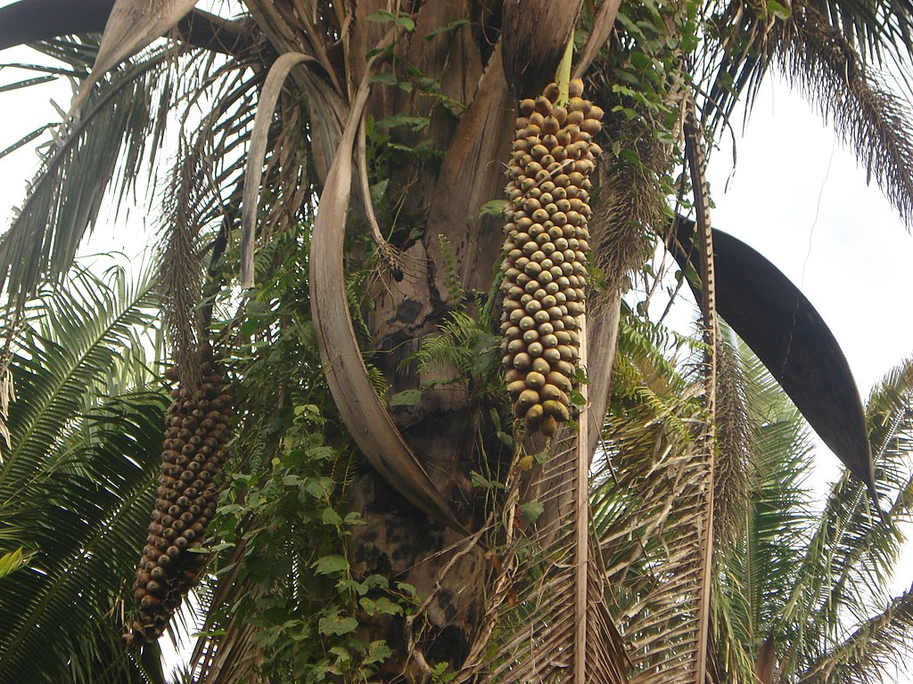
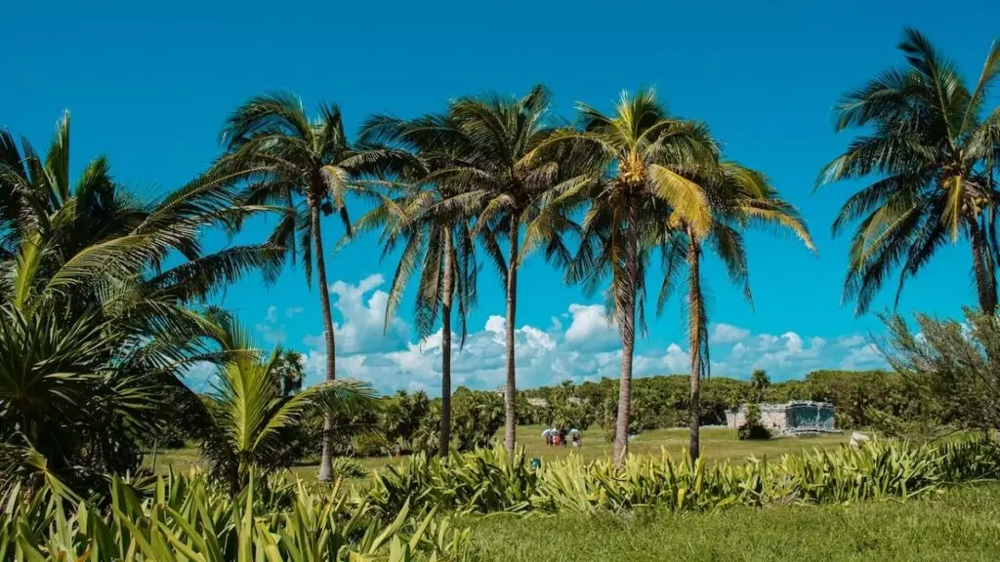
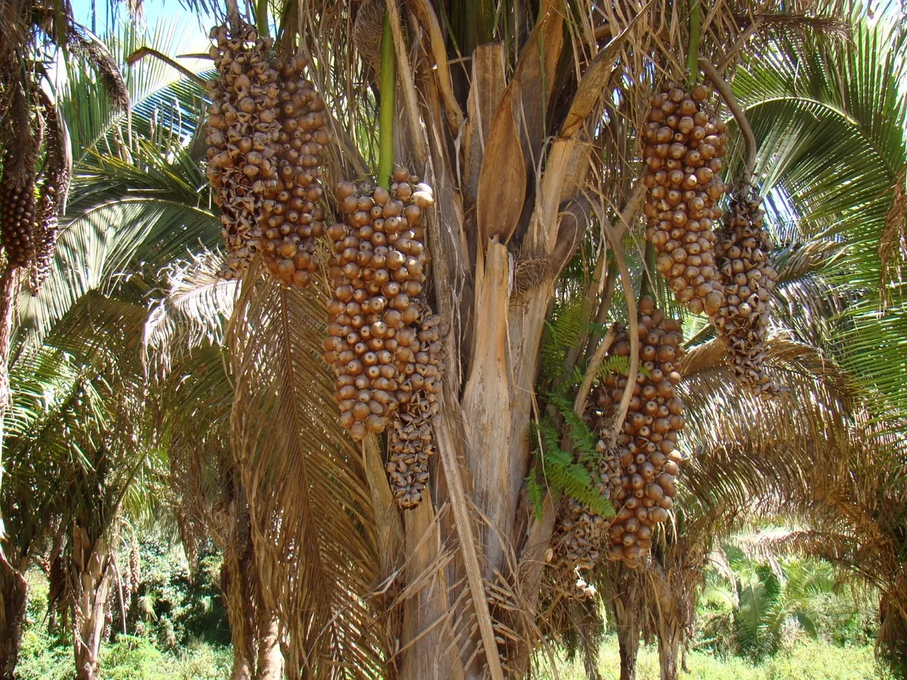
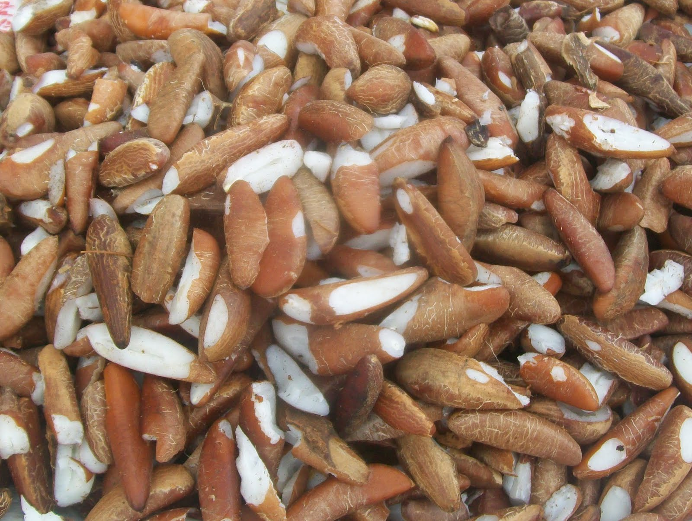

Coco Babaçu
A palmeira do babaçu apresenta a sua principal área de ocorrência nas faixas de transição limítrofes da floresta latifoliada equatorial. É encontrada em maior quantidade nos estados do Maranhão e Piauí, sendo considerada uma planta característica (junto à carnaúba) da formação vegetal Mata dos Cocais, uma zona de transição entre as florestas úmidas da bacia Amazônica e as terras semiáridas do Nordeste brasileiro, no chamado Meio-Norte. Também pode ser encontrada nos estados do Ceará, Pará, Mato Grosso, Tocantins.
babaçu é uma palmeira robusta com estipe isolado (tronco ou caule) de até 20 metros de altura e de 25 a 44 centímetros de diâmetro, com 7 a 22 folhas medindo de 4 a 8 metros de comprimento . Suas flores são de sexos separados, com ramos florais volumosos; pode apresentar até 6 cachos por planta ou mais, sustentados por um pêndulo de 70 a 90 centímetros. Cada cacho possui de 240 a 720 frutos que chegam a pesar de 90 a 240 gramas.
Possui sistema radicular do tipo axial que atinge grandes profundidades no solo, para absorver água e nutrientes. O seu tronco é reto com galhos tortuosos, a casca é corticosa, fendida e grossa.
A destruição do Cerrado e diminuição das espécies
O principal produto extraído do babaçu, e que possui valor industrial, são as amêndoas contidas em seus frutos. As amêndoas – de 3 a 5 em cada fruto – são extraídas manualmente em um sistema caseiro tradicional e de subsistência. É praticamente o único sustento de grande parte da população interiorana das regiões onde ocorre o babaçu: apenas no Estado do Maranhão a extração de sua amêndoa envolve o trabalho de mais de 300 mil famílias. Em especial, mulheres acompanhadas de suas crianças: as “quebradeiras”, como são chamadas.
A palmeira
Além da amêndoa propriamente dita, de onde pode-se obter rações, ácidos graxos e glicerinas, o fruto também tem potencial para várias aplicações na indústria de cosméticos, além da obtenção de óleo comestível e margarinas à metanol, celulose, papel e álcool anidro. Também apresenta um amplo potencial de utilização para obtenção de biocombustível. Mas em escala comercial, somente carvão e óleo têm sido produzidos. O tronco desta palmeira é utilizado em construções rústicas, bem como as folhas empregadas na cobertura de ranchos.
Suas folhas servem de matéria-prima para a fabricação de utilitários – cestos de vários tamanhos e funções, abanos, peneiras, esteiras, cercas, janelas, portas, armadilhas, gaiolas, etc. – e como matéria-prima fundamental na armação e cobertura de casas e abrigos. Durante a seca, essas mesma folhas servem de alimento para a criação. Das palmeiras jovens, quando derrubadas, extrai-se o palmito e coleta-se uma seiva que, fermentada, produz um vinho bastante apreciado regionalmente. O babaçu possui ainda ampla aplicação ornamental no paisagismo de casas e jardins. O desenvolvimento das mudas é considerado lento, enquanto o crescimento da planta, no campo, é moderado.
Utilização do Óleo de Babaçu
O óleo de coco, como é popularmente conhecido, é um dos produtos mais utilizados dentre os derivados do babaçu, podendo ser empregado para fins culinários, como lubrificante, em cosméticos, além de ser alvo de pesquisas científicas para a fabricação de biocombustíveis.
Colheita dos frutos de babaçu no Maranhão, no Brasil O Óleo de babaçu é usado para fins comestíveis e fins industriais. Ele possui elevado teor de ácido láurico.
Bolo típico do nordeste, feito a base de puba com coco babaçu Em alta temperatura, o óleo pode ser usado no cozimento e na fritura de alimentos. Uma das características é o leve gosto amendoado. No entanto, o óleo de babaçu contém gorduras saturadas, dessa forma, não é indicado o uso em excesso.
Como o óleo de babaçu é o que tem o mais alto índice de saponificação, e quanto mais alto o índice, mais apropriado o óleo para a fabricação cosmética. No cabelo, se misturado com o óleo de andiroba, é muito eficaz ao combate a caspa. Puro ou misturado com outros óleos vegetais, ele pode ser aplicado diretamente na pele e no cabelo.